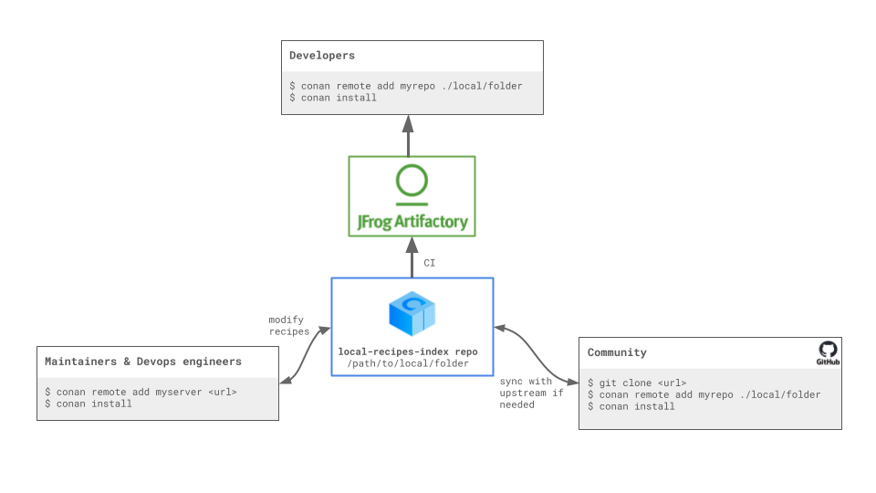

Local Recipes Index Repository¶
The Local Recipes Index is an experimental repository type introduced in Conan to enhance flexibility in managing C/C++ package recipes. This repository type allows users to use a local directory as a Conan remote, where the directory structure mirrors that of the conan-center-index GitHub repository.
This setup is particularly useful for:
Building binaries from a private conan-center-index fork.
Sharing your own recipes for certain libraries or tools that, due to licensing restrictions or proprietary nature, are not suitable for ConanCenter. Check how you can use it for this purpose in the dedicated section of the documentation Local Recipes Index Repository.
Building Binaries from a private conan-center-index fork¶
As we already introduced in the previous section of the Conan DevOps Guide some organizations, particularly large enterprises, prefer not to use binaries downloaded from the internet. Instead, they build their own binaries in-house using the conan-center-index recipes. These organizations often need to customize these recipes to meet unique requirements that are not applicable to the broader community, making such contributions unsuitable for the upstream repository.
The local-recipes-index allows users to maintain a local folder with the same structure as the conan-center-index GitHub repository, using it as a source for package recipes. This new type of repository is recipes-only, necessitating the construction of package binaries from source on each machine where the package is used. For sharing binaries across teams, we continue to recommend using a Conan remote server like Artifactory for production purposes.
{kind=link}

The local-recipes-index repository allows you to easily build binaries from a fork of conan-center-index, and then hosting them on a Conan remote repository like Artifactory. The main difference with the process explained in the previous section is the ability to immediately test multiple local changes without the need to export each time a recipe is modified.
Note that in this case, mixing binaries from ConanCenter with locally built binaries is not recommended for several reasons:
Binary compatibility: There may be small differences in setup between the ConanCenter CI and the user’s CI. Maintaining a consistent setup for all binaries can mitigate some issues.
Full control over builds: Building all binaries yourself ensures you have complete control over the compilation environment and dependency versions.
Instead, it’s recommended to build all your direct and transitive dependencies from the fork. To begin, remove the upstream ConanCenter as it will not be used, everything will come from our own fork:
$ conan remote remove conancenter
Then we will clone our fork (in this case, we are cloning directly the upstream for demo purposes, but you would be cloning your fork instead):
$ git clone https://github.com/conan-io/conan-center-index
Add this as our mycenter remote:
# Add the mycenter remote pointing to the local folder
$ conan remote add mycenter ./conan-center-index
And that’s all! Now you’re set to list and use packages from your conan-center-index local folder:
$ conan list "zlib/*" -r=mycenter
mycenter
zlib
zlib/1.2.11
zlib/1.2.12
zlib/1.2.13
zlib/1.3
zlib/1.3.1
We can also install packages from this repo, for example we can do:
$ conan install --requires=zlib/1.3
...
======== Computing dependency graph ========
zlib/1.3: Not found in local cache, looking in remotes...
zlib/1.3: Checking remote: mycenter
zlib/1.3: Downloaded recipe revision 5c0f3a1a222eebb6bff34980bcd3e024
Graph root
cli
Requirements
zlib/1.3#5c0f3a1a222eebb6bff34980bcd3e024 - Downloaded (mycenter)
======== Computing necessary packages ========
Requirements
zlib/1.3#5c0f3a1a222eebb6bff34980bcd3e024:72c852c5f0ae27ca0b1741e5fd7c8b8be91a590a - Missing
ERROR: Missing binary: zlib/1.3:72c852c5f0ae27ca0b1741e5fd7c8b8be91a590a
As we can see, Conan managed to get the recipe for zlib/1.3 from mycenter, but
then it failed because there is no binary. This is expected, the repository only contains
the recipes, but not the binaries. We can build the binary from source with
--build=missing argument:
$ conan install --requires=zlib/1.3 --build=missing
...
zlib/1.3: package(): Packaged 2 '.h' files: zconf.h, zlib.h
zlib/1.3: package(): Packaged 1 file: LICENSE
zlib/1.3: package(): Packaged 1 '.a' file: libz.a
zlib/1.3: Created package revision 0466b3475bcac5c2ce37bb5deda835c3
zlib/1.3: Package '72c852c5f0ae27ca0b1741e5fd7c8b8be91a590a' created
zlib/1.3: Full package reference: zlib/1.3#5c0f3a1a222eebb6bff34980bcd3e024:72c852c5f0ae27ca0b1741e5fd7c8b8be91a590a#0466b3475bcac5c2ce37bb5deda835c3
zlib/1.3: Package folder /home/conan/.conan2/p/b/zlib1ed9fe13537a2/p
WARN: deprecated: Usage of deprecated Conan 1.X features that will be removed in Conan 2.X:
WARN: deprecated: 'cpp_info.names' used in: zlib/1.3
======== Finalizing install (deploy, generators) ========
cli: Generating aggregated env files
cli: Generated aggregated env files: ['conanbuild.sh', 'conanrun.sh']
Install finished successfully
We can see now the binary package in our local cache:
$ conan list "zlib:*"
Local Cache
zlib
zlib/1.3
revisions
5c0f3a1a222eebb6bff34980bcd3e024 (2024-04-10 11:50:34 UTC)
packages
72c852c5f0ae27ca0b1741e5fd7c8b8be91a590a
info
settings
arch: x86_64
build_type: Release
compiler: gcc
compiler.version: 9
os: Linux
options
fPIC: True
shared: False
Finally, upload the binary package to our Artifactory repository to make it available for our organization, users and CI jobs:
$ conan remote add myartifactoryrepo <artifactory_url>
$ conan upload zlib* -r=myartifactoryrepo -c
This way, consumers of the packages will not only enjoy the pre-compiled binaries and avoid having to always re-build from source all dependencies, but that will also provide stronger guarantees that the dependencies build and work correctly, that all dependencies and transitive dependencies play well together, etc. Decoupling the binary creation process from the binary consumption process is the way to achieve faster and more reliable usage of dependencies.
Remember, in a production setting, the conan upload command should be executed by CI, not developers, following the Conan guidelines. This approach ensures that package consumers enjoy pre-compiled binaries and consistency across dependencies.
Modifying the local-recipes-index repository files¶
One of the advantages of this approach is that all the changes that we do in every single recipe are automatically available for the Conan client. For example, changes to the recipes/zlib/config.yml file are immediately recognized by the Conan client. If you edit that file and remove all versions but the latest and then we list the recipes:
$ conan list "zlib/*" -r=mycenter
mycenter
zlib
zlib/1.3.1
When some of the recipes change, then note that the current Conan home already contains a
cached copy of the package, so it will not update it unless we explicitly use the
--update, as any other Conan remote.
So if we do a change in the zlib recipe in recipes/zlib/all/conanfile.py and
repeat:
$ conan install --requires=zlib/1.3.1 -r=mycenter --update --build=missing
We will immediately have the new package binary locally built from source from the new modified recipe in our Conan home.
Using local-recipes-index Repositories in Production¶
Several important points should be considered when using this new feature:
It is designed for third-party packages, where recipes in one repository are creating packages with sources located elsewhere. To package your own code, the standard practice of adding conanfile.py recipes along with the source code and using the standard conan create flow is recommended.
The local-recipes-index repositories point to local folders in the filesystem. While users may choose to sync that folder with a git repository or other version control mechanisms, Conan is agnostic to this, as it is only aware of the folder in the filesystem that points to the (current) state of the repository. Users may choose to run git commands directly to switch branches/commit/tags and Conan will automatically recognise the changes
This approach operates at the source level and does not generate package binaries. For deployment for development and production environments, the use of a remote package server such as Artifactory is crucial. It’s important to note that this feature is not a replacement for Conan’s remote package servers, which play a vital role in hosting packages for regular use.
Also, note that a server remote can retain a history of changes storing multiple recipe revisions. In contrast, a local-recipes-index remote can only represent a single snapshot at any given time.
ConanCenter does not use
python-requires, as this is a mechanism more intended for first-party packages. Usingpython-requiresin alocal-recipes-indexrepository is possible (and experimental) at this moment, but only if thepython-requiresare also in the same index repository. It is not intended or planned to support having thesepython-requiresin other repositories or in the user Conan cache.
Furthermore, this feature does not support placing server URLs directly in recipes; remote repositories must be explicitly added with conan remote add. Decoupling abstract package requirements, such as “zlib/1.3.1”, from their specific origins is crucial to resolving dependencies correctly and leveraging Conan’s graph capabilities, including version conflict detection and resolution, version-ranges resolution, opting into pre-releases, platform_requires, replace_requires, etc. This separation also facilitates the implementation of modern DevOps practices, such as package immutability, full relocatability and package promotions.